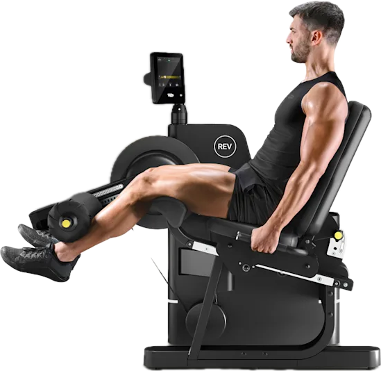

Máquina de extensión de piernas
Esta máquina se utiliza principalmente para trabajar los cuádriceps.

Información
- Tipo de máquina: piernas.
- Grupo muscular principal: cuádriceps.
- Identificación mediante NFC o QR.
- Registro de series y repeticiones.
- Registro del peso utilizado.
Funcionamiento en SpiderGym
El usuario se identifica en la máquina mediante NFC o QR. Después, el sistema puede registrar la actividad realizada y asociarla a su cuenta.
Volver al catálogo